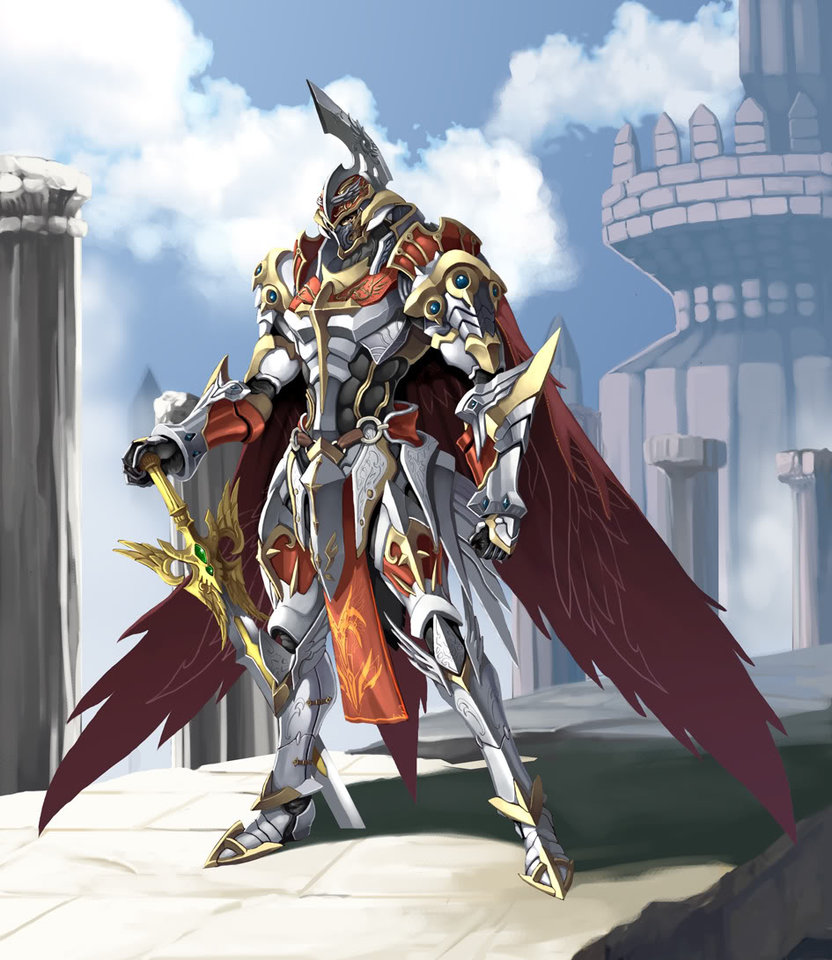
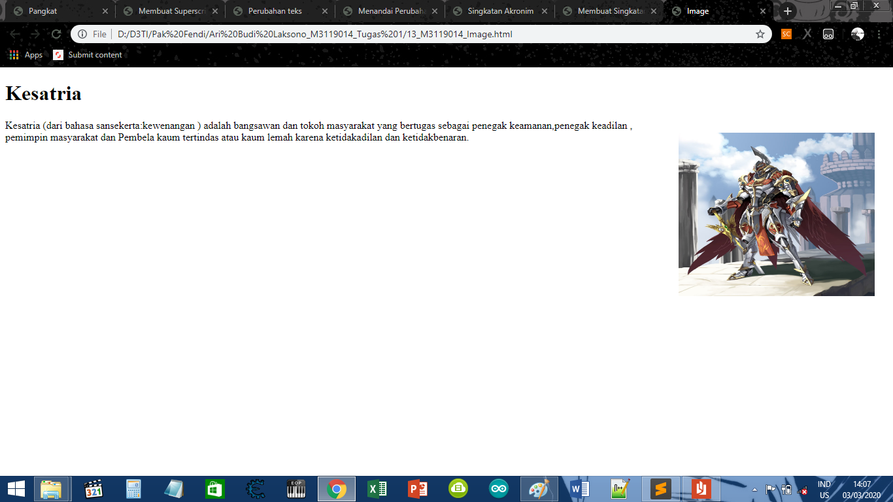

Membuat Image
KODE PROGRAM
<!DOCTYPE html>
<html>
<head>
<meta charset-"UTF-8">
<title>Image</title>
</head>
<body>
<h1>Kesatria</h1>

<p>
Kesatria (dari bahasa sansekerta:kewenangan ) adalah bangsawan dan tokoh masyarakat
yang bertugas sebagai penegak keamanan,penegak keadilan , pemimpin masyarakat dan
Pembela kaum tertindas atau kaum lemah karena ketidakadilan dan ketidakbenaran.
</p>
</body>
</html>
HASIL PROGRAM
Kesatria
Kesatria (dari bahasa sansekerta:kewenangan ) adalah bangsawan dan tokoh masyarakat
yang bertugas sebagai penegak keamanan,penegak keadilan , pemimpin masyarakat dan
Pembela kaum tertindas atau kaum lemah karena ketidakadilan dan ketidakbenaran.
SCREENSHOT

KESIMPULAN
Dari koding di atas, Dapat disimpulkan bahwa Didalam sebuah web dapat diberikan gambar
Dan Gambar tersebut dapat diatur sesuai dengan keinginan pembuat web
Kembali Ke Halaman Utama